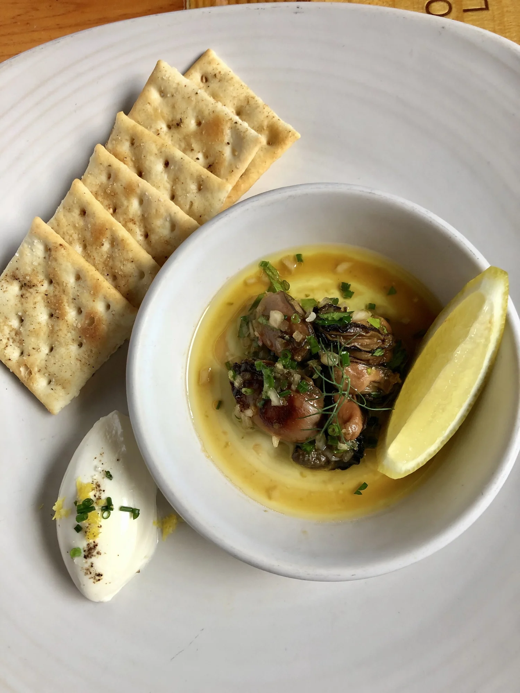
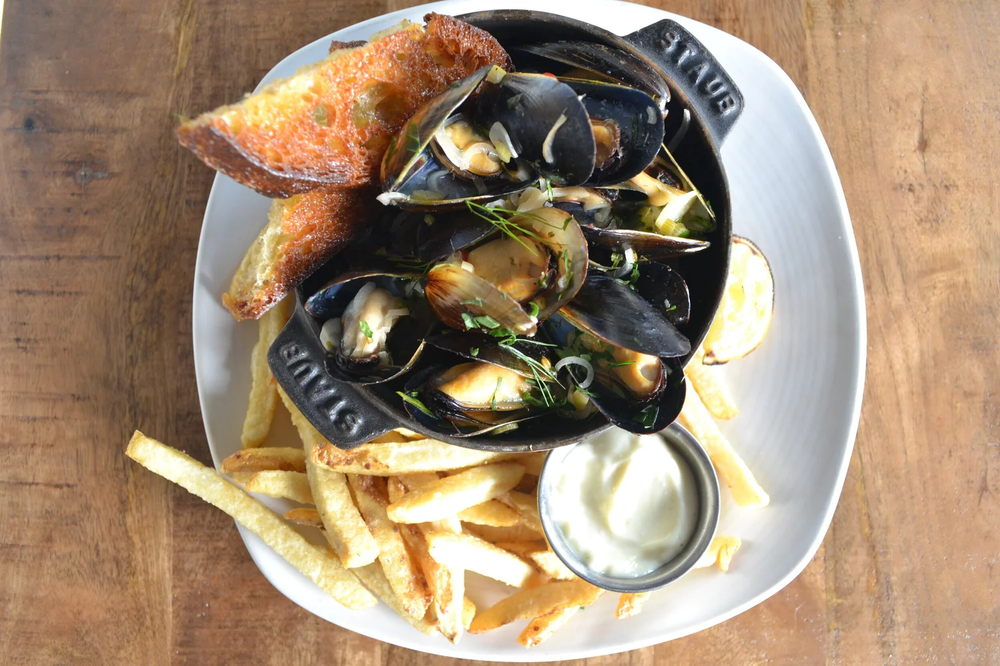
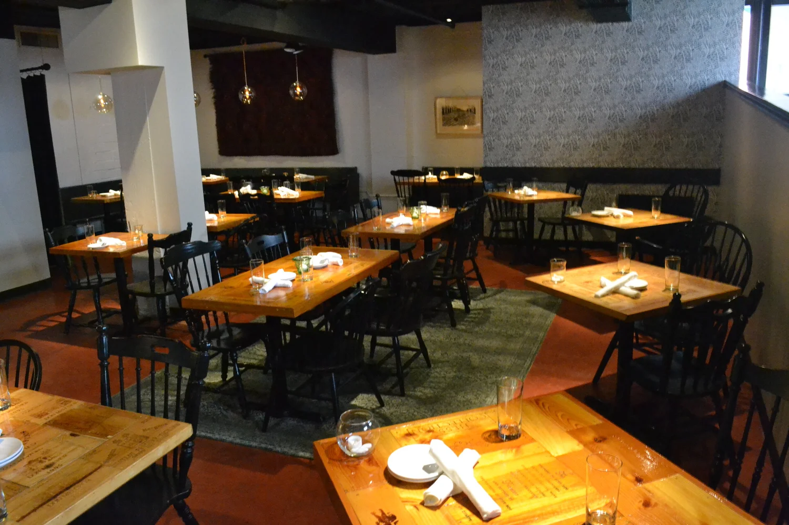

An intimate wine cellar and seasonal land-and-sea kitchen. Boutique bottles, a full bar, and oysters on ice, five nights a week.
Our cellar leans on boutique and organic producers from across the world, chosen because they taste like somewhere. Come in knowing exactly what you want, or hand it to the bar and let us pour you somewhere new.
The bar runs the full length of the room. Craft cocktails, local beers and ciders, and a rotating pour list for the nights you'd rather stay by the glass.
Wednesdays, oysters go all night. Fridays and Saturdays fill fast. Either way, the seat at the bar is the best one in the house.
A seasonal menu that turns over with what's good. A few of tonight's plates below — the full menu changes weekly.


A selection only — the printed menu changes weekly with the season. Vegetarian options are marked in-house; please tell your server about any dietary preferences.

Our private dining room seats up to twenty — right for a business dinner, a rehearsal, or a birthday that deserves the good bottles. Tell us the occasion and we'll build the evening around it.
We accept bookings up to three months in advance. Walk-ins are welcome at the bar when there's room.